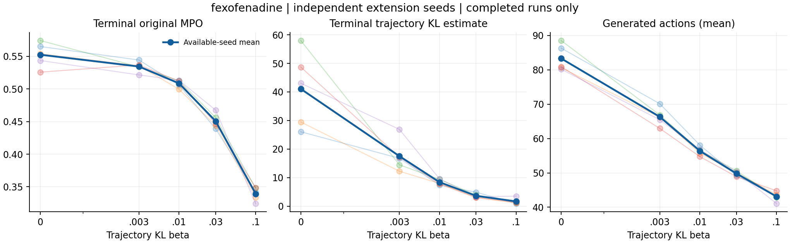
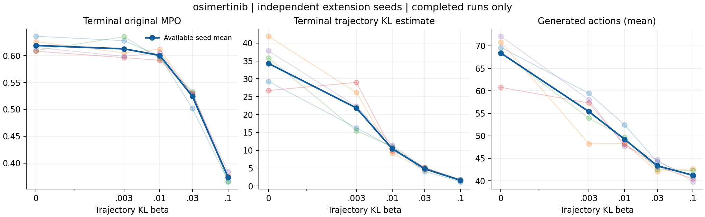

已取得完整原始账本：108/108；截止：2026-11-15T09:28:22+08:00。未完成的组不计零分。
| 阶段 | 任务 | 条件 | 种子数 | 实际查询均值 | 固定预算MPO AUC* | 终态原MPO均值 | 修改后训练回报 | 终态轨迹KL估计 |
|---|---|---|---|---|---|---|---|---|
| kl_dose | fexofenadine | frozen | 5 | 3000.0000 | 0.6752 | 0.2370 | 0.2370 | 0.0000 |
| kl_dose | fexofenadine | kl_0003 | 5 | 3000.0000 | 0.6825 | 0.5344 | 0.5344 | 17.5229 |
| kl_dose | fexofenadine | kl_001 | 5 | 3000.0000 | 0.6817 | 0.5087 | 0.5087 | 8.4240 |
| kl_dose | fexofenadine | kl_003 | 5 | 3000.0000 | 0.6811 | 0.4507 | 0.4507 | 3.6399 |
| kl_dose | fexofenadine | kl_01 | 5 | 3000.0000 | 0.6816 | 0.3392 | 0.3392 | 1.6789 |
| kl_dose | fexofenadine | rf | 5 | 3000.0000 | 0.6803 | 0.5526 | 0.5526 | 41.0571 |
| kl_dose | osimertinib | frozen | 5 | 3000.0000 | 0.7518 | 0.1884 | 0.1884 | 0.0000 |
| kl_dose | osimertinib | kl_0003 | 5 | 3000.0000 | 0.7593 | 0.6127 | 0.6127 | 21.8510 |
| kl_dose | osimertinib | kl_001 | 5 | 3000.0000 | 0.7652 | 0.6005 | 0.6005 | 10.4780 |
| kl_dose | osimertinib | kl_003 | 5 | 3000.0000 | 0.7630 | 0.5241 | 0.5241 | 4.8155 |
| kl_dose | osimertinib | kl_01 | 5 | 3000.0000 | 0.7617 | 0.3731 | 0.3731 | 1.6007 |
| kl_dose | osimertinib | rf | 5 | 3000.0000 | 0.7578 | 0.6190 | 0.6190 | 34.3189 |
| long_budget | fexofenadine | frozen | 3 | 10000.0000 | 0.6962 | 0.2306 | 0.2306 | 0.0000 |
| long_budget | fexofenadine | kl_001 | 3 | 10000.0000 | 0.7139 | 0.5785 | 0.5785 | 9.9796 |
| long_budget | fexofenadine | rf | 3 | 10000.0000 | 0.7094 | 0.6414 | 0.6414 | 135.4156 |
| long_budget | osimertinib | frozen | 3 | 10000.0000 | 0.7732 | 0.1852 | 0.1852 | 0.0000 |
| long_budget | osimertinib | kl_001 | 3 | 10000.0000 | 0.7909 | 0.6613 | 0.6613 | 9.8934 |
| long_budget | osimertinib | rf | 3 | 10000.0000 | 0.7909 | 0.6946 | 0.6946 | 77.0486 |
| mechanism | fexofenadine | frozen | 5 | 3000.0000 | 0.6692 | 0.2379 | 0.2379 | 0.0000 |
| mechanism | fexofenadine | kl_001 | 5 | 3000.0000 | 0.6803 | 0.5061 | 0.5061 | 7.7474 |
| mechanism | fexofenadine | length_0001 | 5 | 3000.0000 | 0.6803 | 0.5440 | 0.4752 | 38.3127 |
| mechanism | fexofenadine | length_0003 | 5 | 3000.0000 | 0.6802 | 0.5251 | 0.3615 | 32.5058 |
| mechanism | fexofenadine | rf | 5 | 3000.0000 | 0.6795 | 0.5503 | 0.5503 | 45.9052 |
| mechanism | fexofenadine | upper_tpsa150 | 5 | 3000.0000 | 0.6806 | 0.4967 | 0.4598 | 36.5413 |
* 未达固定预算的曲线延续最后观察值。逐组同时保留实际查询数、停止原因与实际预算AUC，不能将早停隐藏成完成全部查询。缺失终态指标标missing。
不同阶段预算、终态样本数及目标不同，分别比较；KL为token轨迹相对固定prior的采样估计，可有方差，不能当作canonical分子KL。所有初始模型和评分定义相同，实际停止原因保留。


图中浅线为已完成的独立种子，深线为可用种子均值；不同点可能尚未齐种子，不用于提前选参数。